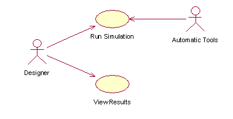
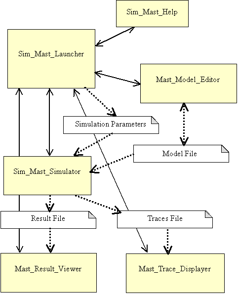

<!DOCTYPE html PUBLIC "-//W3C//DTD HTML 4.01 Transitional//EN"><html><head><title>sim_mast1</title>
  

  
                    
  
  <meta http-equiv="content-type" content="text/html; charset=ISO-8859-1"></head><body><br>

     
<table cellpadding="2" cellspacing="2" border="0" width="100%">

         <tbody>
           <tr>
             <td valign="top">
         <br>
         </td>
         <td valign="top">                                              
  
      <h4 align="center" style="text-align: center;"><br>
             <span lang="EN-US" style="font-size: 16pt; color: green;"></span></h4>
                                                       
      <h4 align="center" style="text-align: center;"><span lang="EN-US" style="font-size: 16pt; color: green;">SIM_MAST:<o:p></o:p></span></h4>
                                                          
      <h4 align="center" style="text-align: center;"><span lang="EN-US" style="font-size: 16pt; color: green;">Simulator of MAST Models</span></h4>
         <b><span lang="EN-US" style="font-size: 10pt; vertical-align: baseline;">         </span></b><br>
             </td>
             <td valign="top" bgcolor="#ffff99"><font color="#3366ff"><i><u><a href="#objetivos">Objectives</a><br>
             <a href="#usecases">Use cases</a><br>
             <a href="#componentes">Components</a><br>
             <a href="#profiles">Profiles</a><br>
             <a href="#restricitions">Restrictions</a></u></i></font><br>
             <br>
             </td>
           </tr>
                           
  </tbody>       
</table>

   <br>

   <br>

   <span style="vertical-align: baseline;">Sim_Mast is a tool that executes the simulation process of a MAST model, generating information about:<o:p></o:p></span>             
<p class="MsoNormal" style="margin-left: 21.3pt; text-align: justify; text-indent: -18pt;"> <span style="vertical-align: baseline;">    <o:p></o:p> 
 &nbsp; &nbsp; &nbsp; -<span style="font-family: &quot;Times New Roman&quot;; font-style: normal; font-variant: normal; font-weight: normal; font-size: 7pt; line-height: normal; font-stretch: normal; font-size-adjust: none;"> </span></span>The fulfillment of the timing requirements set in the model.<br>
   <span style="vertical-align: baseline;">-<span style="font-family: &quot;Times New Roman&quot;; font-style: normal; font-variant: normal; font-weight: normal; font-size: 7pt; line-height: normal; font-stretch: normal; font-size-adjust: none;"> </span></span>The temporal behavior of the model in the worst, the best and the average case.<br>
    <span style="vertical-align: baseline;">- The utilization of active and passive resources.</span><br>
    <span style="vertical-align: baseline;">-<span style="font-family: &quot;Times New Roman&quot;; font-style: normal; font-variant: normal; font-weight: normal; font-size: 7pt; line-height: normal; font-stretch: normal; font-size-adjust: none;"> 
           </span></span>The execution traces.<br>
   </p>

     
<p class="MsoNormal" style="margin-left: 21.3pt; text-align: justify; text-indent: -18pt;"><font color="#009900"><span style="font-size: 14pt;"><br>
   </span></font></p>

   <font color="#009900"><span style="font-size: 14pt;"><a name="objetivos"></a><b>Objectives</b></span></font><br>
<br>

   <span style="vertical-align: baseline;">&nbsp; &nbsp;The simulator has been developed with the following objectives:</span><span style="vertical-align: baseline;"><br>
</span>
<blockquote><span style="vertical-align: baseline;">-<span style="font-family: &quot;Times New Roman&quot;; font-style: normal; font-variant: normal; font-weight: normal; font-size: 7pt; line-height: normal; font-stretch: normal; font-size-adjust: none;"> 
  </span></span>Estimating the behavior of the modeled system when there is no alternative analytic analysis tool.<br>
  <span style="vertical-align: baseline;">-<span style="font-family: &quot;Times New Roman&quot;; font-style: normal; font-variant: normal; font-weight: normal; font-size: 7pt; line-height: normal; font-stretch: normal; font-size-adjust: none;"> 
  </span></span>Evaluating the correctness and efficiency of other design and analysis methods and tools.<br>
  <span style="vertical-align: baseline;">-<span style="font-family: &quot;Times New Roman&quot;; font-style: normal; font-variant: normal; font-weight: normal; font-size: 7pt; line-height: normal; font-stretch: normal; font-size-adjust: none;"> </span></span>Help in identifying bugs and bottleneck points in different stages of the developing process.&nbsp;         
     
</blockquote>
<div align="left">
<h4><small><font color="#009900"><big><big><big><span style="color: green;"><a name="usecases"></a><font color="#009900">Use Cases</font></span></big></big></big></font></small></h4>
&nbsp; &nbsp; &nbsp;The tool has two users:<br>
<br>
<span style="vertical-align: baseline;"></span><span style="vertical-align: baseline;"> </span>   
<h5><small><font color="#009900"><big><big><big><span style="color: green;"></span></big></big></big></font></small> &nbsp; &nbsp; 
 &nbsp; &nbsp; &nbsp; &nbsp; &nbsp; &nbsp; &nbsp; &nbsp; &nbsp; &nbsp; &nbsp; 
 &nbsp; &nbsp; &nbsp; &nbsp; &nbsp; &nbsp; &nbsp; &nbsp; &nbsp; &nbsp; &nbsp; 
 &nbsp; &nbsp;
    </h5>
   
<blockquote><span style="vertical-align: baseline;"><o:p></o:p></span><br>
  <span style="vertical-align: baseline;">-<span style="font-family: &quot;Times New Roman&quot;; font-style: normal; font-variant: normal; font-weight: normal; font-size: 7pt; line-height: normal; font-stretch: normal; font-size-adjust: none;"> &nbsp;</span></span>The <b>designer</b>, 
who needs to know the response of a system whose temporal behavior has been 
previously modeled with&nbsp; Mast. The designer will need to execute the
simulation of the model and then view the results of that execution.    
    <div align="justify">          </div>
  <p class="MsoNormal" style="margin-left: 3.3pt; text-align: justify;" align="justify"><span style="vertical-align: baseline;">  
  <o:p></o:p></span></p>
  <div align="justify">           </div>
  <span style="vertical-align: baseline;">-<span style="font-family: &quot;Times New Roman&quot;; font-style: normal; font-variant: normal; font-weight: normal; font-size: 7pt; line-height: normal; font-stretch: normal; font-size-adjust: none;"> 
           </span></span><b> &nbsp;Automatic Tools </b>destined
to implement design processes or evaluation of other analysis tools. In this case,
the simulation execution will be iteratively invoked over a set of models
generated by the tool. &nbsp; &nbsp; &nbsp; &nbsp;<br>
</blockquote>
             

 
     

     

    
  <br>
   <br>
   <span style="font-size: 14pt; color: green;"><a name="componentes"></a>Components</span><br>
<br>
   <span style="vertical-align: baseline;">&nbsp;The tool is provided as a set of four executable programs:<o:p></o:p></span>    
                                                           
<br>
 
<blockquote><span style="vertical-align: baseline;"> -<span style="font-family: &quot;Times New Roman&quot;; font-style: normal; font-variant: normal; font-weight: normal; font-size: 7pt; line-height: normal; font-stretch: normal; font-size-adjust: none;"> 
           </span></span><b>Sim_Mast_Launcher:</b>
An easy GUI application that allows to invoke the simulator, by choosing the execution parameters that are to be used.<br>
  <span style="vertical-align: baseline;"></span><span style="vertical-align: baseline;">-<span style="font-family: &quot;Times New Roman&quot;; font-style: normal; font-variant: normal; font-weight: normal; font-size: 7pt; line-height: normal; font-stretch: normal; font-size-adjust: none;"> 
           </span></span><b>Sim_Mast_Simulator:</b> The program that executes the simulation of the model.<o:p></o:p><span style="vertical-align: baseline;"></span><br>
  <span style="vertical-align: baseline;">-<span style="font-family: &quot;Times New Roman&quot;; font-style: normal; font-variant: normal; font-weight: normal; font-size: 7pt; line-height: normal; font-stretch: normal; font-size-adjust: none;"> 
           </span></span><b>Mast_Results_Viewer:</b>&nbsp; 
  GUI graphic tool for viewing the simulation results.<span style="vertical-align: baseline;"></span><span style="vertical-align: baseline;"></span><br>
  <span style="vertical-align: baseline;">-<span style="font-family: &quot;Times New Roman&quot;; font-style: normal; font-variant: normal; font-weight: normal; font-size: 7pt; line-height: normal; font-stretch: normal; font-size-adjust: none;"> 
           </span></span><b>Mast_Traces_Displayer:</b>&nbsp; 
  GUI graphic tool for viewing the simulation traces.

   
     
</blockquote>
    <p class="MsoNormal" style="margin-left: 21.3pt; text-align: justify; text-indent: -18pt;"><br>
   
   <br>
   </p>
     
<p class="MsoNormal" style="margin-left: 21.3pt; text-align: justify; text-indent: -18pt;"><br>
   </p>
     
<h6><span style="font-size: 14pt; color: green;"><a name="interfaz"></a>User interface</span></h6>
     
<p class="MsoBodyText">The<b>&nbsp; Sim_Mast_Launcher</b> module is a GUI 
program that allows the selection of&nbsp; the Mast model that is going
to be analyzed, the assignment of the simulation parameters and then, the invocation of the simulation tools.</p>
                

                

                

                

                

                
<span style="vertical-align: baseline;">   The user interface is based on a graphic window, which </span><span style="vertical-align: baseline;"></span> contains the following controls for defining the elements needed for the simulation:<br>
<blockquote><b>Directory</b>: 
Text box that defines the directory used to create the Model file's pathname, which is also used to place the output files.<br>
  <br>
  <b>Model
    File</b>:
 Text box that defines the name of the Mast Model file used as input for
the simulator. The complete input file pathname is the concatenation of the
Directory and Model File entries in the way: &lt;Directory&gt;+&lt;Model
 File&gt;. For the example in the next figure, it would be: &#8220;C:\Temp\Telerobot.txt&#8221;.<br>
  <br>
  <b>Results
    File</b>:
 Text box that defines the name of the output files generated by the simulator. 
The complete output files pathname is the concatenation of the Directory and
Results File entries with the appropriate suffix, according to the kind of
results, in the way:&nbsp;&lt; Directory&gt;+&lt;Results    File&gt;+{&#8221;.res&#8221;|&#8221;.log.xml&#8221;|&#8221;.bak&#8221;}. 
When the extension of the model file is &acute;xml&acute;, the output files
pathname is: &lt;Directory&gt;+&lt;ResultsFile&gt;+{&#8221;.res&#8221;|&#8221;.log&#8221;|&#8221;.bak&#8221;}+".xml".
The suffix ".res" is used for the simulation results file, ".log.xml" is used 
for the traces file and the ".bak" file keeps a copy of the simulated model. 
For the example in the next figure, the results file name would be: "C:\Temp\Telerobot_1.res".&nbsp;
   <p class="MsoBodyText" style="margin-left: 1cm; text-indent: -14.15pt;">  
   <o:p></o:p></p>
  <b>Time</b>: 
Text box that defines the maximum simulation time, at which the simulation
execution finishes. In some profiles it represents the simulation
time, in others it is a timeout used to terminate the simulation when the ordinary finalizing criterion is not satisfied.
  <p class="MsoBodyText">   <o:p></o:p></p>
  <b>Profile</b>:<span style=""> </span>Label that specifies the results profile used in the simulation. The possible values are:<span lang="EN-US" style="">   &nbsp; &nbsp; &nbsp;
 &nbsp; &nbsp; &nbsp; </span><br>
  <span lang="EN-US" style=""></span><span lang="EN-US" style="">
  SCHEDULABILITY, VERIFICATION, EXHAUSTIVE.</span><br>
  <br>
  <b>Buffer</b>: It defines the buffer length, in bytes, of the logger used. In the case that the buffer is managed in a bounded or
circular way, it is the buffer size, though if it is unbounded, it
represents the size of the blocks used to storage them. It can take
the values:    512, 2K, 8K y 32K.<br>
  <p>
<b>Executions:</b> It is used as a finalizing criterion in some profiles, the
execution finishes when every transaction has been simulated at
least the number of times specified.  <br>
  </p>
  <p class="MsoBodyText">   <o:p></o:p></p>
  <b>Model</b>: Button that launches a dialog box that helps to select the Directory and Model file to be used.
  <p class="MsoBodyText" style="margin-left: 14.2pt; text-indent: -14.2pt;"><span style="">  </span></p>
  <p class="MsoBodyText">   <o:p></o:p><b>Default</b>:
  Button that set the default output root file name, this is the model file
name followed by an underscore and a number, that is: &lt;Model
File&gt;+&#8217;_&#8217;+&lt;n&gt;&#8217;. The number increases to avoid loosing previous results.</p>
  <p class="MsoBodyText">   <o:p></o:p><b>From</b>:
  Button that establishes as Model File the ".bak"&nbsp; file associated
to the file in the Results File entry. This button is disabled when a results
file name is established and the corresponding ".bak" file does not exist. 
  </p><p class="MsoBodyText" style="margin-left: 14.2pt;">  
   <o:p></o:p></p>
  <b>Edit
 model</b>: 
Button that launches the model file editor (this program is under development).
This editor handles model files with the extensions {`.mdl&#8217;|&#8217;.bak&#8217;| &#8217;.txt&#8217;}, 
and always saves them with the &#8217;.mdl&#8217; extension.   <p class="MsoBodyText" style="margin-left: 14.2pt; text-indent: -14.2pt;"><span style="">  </span></p>
  <o:p></o:p><b> Execute</b>: Button that executes the Model File simulation. It is enabled only if the file extension is &acute;.xml` or &acute;.txt`.
                
  <br>
<br>
  <o:p></o:p><b>View Results</b>: Button that launches the results viewer.It is enabled only if the results file with &acute;.res&acute; extension exists.<br>
  <br>
  <b> Display Traces</b>: Button that launches the traces viewer. It is enabled only if the results file with &#8217;.log&#8217; extension exists.
  <p class="MsoBodyText" style="margin-left: 14.2pt;">  
   <o:p></o:p></p>
  <b>Exit</b>: Button that finishes the program.<span style="">  </span><b><o:p></o:p></b>
  <p class="MsoBodyText"><b>   <o:p></o:p></b></p>
  <b>Help</b>: Button that launches an html browser with a help page showing information about the use of this program (this page).<br>
</blockquote>

                

                

                

                

             
     


                

                

                

                

                

                

                

                

                

                
   

                

                

                

                
   
                

                

                

                


<p class="MsoBodyText"><br>
</p>
<p class="MsoBodyText">&nbsp; &nbsp; &nbsp; &nbsp; &nbsp; &nbsp;&nbsp; &nbsp; 
<br>
</p>

   <br>
   <br>
   <b><span style="font-size: 14pt; color: green;"><a name="profiles"></a>Profiles<br>
   </span></b>
<p>&nbsp; &nbsp; A profile establishes
 the objective of the model simulation. It defines:<br>
</p>
<blockquote>- The statistical magnitudes that are to be evaluated.<br>
- The logging messages and traces that are to be generated.<br>
- The buffer managing mode.<br>
- The criterion for ending the simulation.
 
  
</blockquote>

<p class="MsoBodyText"><span style="">  </span></p>
<p>
                

                
<b>   </b><span style="vertical-align: baseline;"><small><b>SCHEDULABILITY_PROFILE</b></small>:
It generates information equivalent to that generated
by the schedulability analysis tool.</span><br>
</p>
&nbsp; &nbsp;- &nbsp; Monitoring:<br>
<blockquote><span style="vertical-align: baseline;"></span><span style="font-family: &quot;Courier New&quot;; vertical-align: baseline;">o<span style="font-family: &quot;Times New Roman&quot;; font-style: normal; font-variant: normal; font-weight: normal; font-size: 7pt; line-height: normal; font-stretch: normal; font-size-adjust: none;">&nbsp;&nbsp;&nbsp;&nbsp;&nbsp;&nbsp; 
</span></span>Events that has Timing Requirements associated and events that are the output of a segment.<o:p></o:p>
  
  <span style="font-family: &quot;Courier New&quot;; vertical-align: baseline;"> </span><br>
  <span style="font-family: &quot;Courier New&quot;; vertical-align: baseline;">o<span style="font-family: &quot;Times New Roman&quot;; font-style: normal; font-variant: normal; font-weight: normal; font-size: 7pt; line-height: normal; font-stretch: normal; font-size-adjust: none;">&nbsp;&nbsp;&nbsp;&nbsp;&nbsp;&nbsp; </span></span>Events which represent the end of transactions.<o:p></o:p>
  
  <span style="font-family: &quot;Courier New&quot;; vertical-align: baseline;">&nbsp; &nbsp; &nbsp;</span><span style="font-family: &quot;Courier New&quot;; vertical-align: baseline;"></span><br>
  <span style="font-family: &quot;Courier New&quot;; vertical-align: baseline;">o<span style="font-family: &quot;Times New Roman&quot;; font-style: normal; font-variant: normal; font-weight: normal; font-size: 7pt; line-height: normal; font-stretch: normal; font-size-adjust: none;">&nbsp;&nbsp;&nbsp;&nbsp;&nbsp;&nbsp; 
</span></span>The utilization of resources.<o:p></o:p></blockquote>
<div align="justify"><!--[endif]--><!--[if !supportLists]--><!--[endif]--><!--[if !supportLists]--><!--[endif]-->
  
<p class="MsoNormal" style="margin-left: 30pt; text-align: justify; text-indent: -22.9pt;"><!--[if !supportLists]--><span style="vertical-align: baseline;">-<span style="font-family: &quot;Times New Roman&quot;; font-style: normal; font-variant: normal; font-weight: normal; font-size: 7pt; line-height: normal; font-stretch: normal; font-size-adjust: none;">&nbsp;&nbsp;&nbsp;&nbsp;&nbsp;&nbsp;
</span></span><!--[endif]-->Logging:<span style="font-family: &quot;Courier New&quot;; vertical-align: baseline;"><br>
</span></p>
<blockquote><span style="font-family: &quot;Courier New&quot;; vertical-align: baseline;">o<span style="font-family: &quot;Times New Roman&quot;; font-style: normal; font-variant: normal; font-weight: normal; font-size: 7pt; line-height: normal; font-stretch: normal; font-size-adjust: none;">&nbsp;&nbsp;&nbsp;&nbsp;&nbsp;&nbsp; 
</span></span>Messages that are generated when a Timing Requirement is not fulfilled.<o:p></o:p></blockquote>


  
<!--[if !supportLists]--><!--[endif]-->

  
<p class="MsoNormal" style="margin-left: 21.3pt; text-align: justify; text-indent: -14.2pt;"><!--[if !supportLists]--><span style="vertical-align: baseline;">-<span style="font-family: &quot;Times New Roman&quot;; font-style: normal; font-variant: normal; font-weight: normal; font-size: 7pt; line-height: normal; font-stretch: normal; font-size-adjust: none;">&nbsp;&nbsp;&nbsp;&nbsp;&nbsp;&nbsp;
</span></span><!--[endif]-->Buffer Managing: <o:p></o:p></p>

  
<!--[if !supportLists]-->
<blockquote><span lang="EN-US" style="font-family: &quot;Courier New&quot;; vertical-align: baseline;">o<span style="font-family: &quot;Times New Roman&quot;; font-style: normal; font-variant: normal; font-weight: normal; font-size: 7pt; line-height: normal; font-stretch: normal; font-size-adjust: none;">&nbsp;&nbsp;&nbsp;&nbsp;&nbsp;&nbsp;
</span></span><span lang="EN-US" style="">BOUNDED mode.<o:p></o:p></span></blockquote>
<!--[endif]-->

  
<p class="MsoNormal" style="margin-left: 21.3pt; text-align: justify; text-indent: -14.2pt;"><!--[if !supportLists]--><span style="vertical-align: baseline;">-<span style="font-family: &quot;Times New Roman&quot;; font-style: normal; font-variant: normal; font-weight: normal; font-size: 7pt; line-height: normal; font-stretch: normal; font-size-adjust: none;">&nbsp;&nbsp;&nbsp;&nbsp;&nbsp;&nbsp;</span></span> Ending criterion:<o:p></o:p></p>

  
<!--[if !supportLists]-->
<blockquote><span style="font-family: &quot;Courier New&quot;; vertical-align: baseline;"> o<span style="font-family: &quot;Times New Roman&quot;; font-style: normal; font-variant: normal; font-weight: normal; font-size: 7pt; line-height: normal; font-stretch: normal; font-size-adjust: none;">&nbsp;&nbsp;&nbsp;&nbsp; </span></span>It ends when
the terminal events of every transaction have been reached at least a minimum
number of times, or by timeout, when the maximum simulation time is elapsed.<br>
  <br>
</blockquote>
<span style="vertical-align: baseline;"></span><span style="vertical-align: baseline;"><small><b>VERIFICATION_PROFILE</b></small>: Its objective is searching for situations in which the timing requirements are not fulfilled.<o:p></o:p></span><!--[endif]-->
  
  
 

</div>
                

                

                
<p class="MsoNormal" style="margin-left: 21.3pt; text-align: justify; text-indent: -14.2pt;"> <span style="vertical-align: baseline;">-<span style="font-family: &quot;Times New Roman&quot;; font-style: normal; font-variant: normal; font-weight: normal; font-size: 7pt; line-height: normal; font-stretch: normal; font-size-adjust: none;"> 
              </span></span> Monitoring:<o:p></o:p></p>
                          
 
<blockquote><span style="font-family: &quot;Courier New&quot;; vertical-align: baseline;">o</span><span style="font-family: &quot;Courier New&quot;; vertical-align: baseline;"><span style="font-family: &quot;Times New Roman&quot;; font-style: normal; font-variant: normal; font-weight: normal; font-size: 7pt; line-height: normal; font-stretch: normal; font-size-adjust: none;"></span></span> &nbsp;<span style="font-family: &quot;Courier New&quot;; vertical-align: baseline;"><span style="font-family: &quot;Times New Roman&quot;; font-style: normal; font-variant: normal; font-weight: normal; font-size: 7pt; line-height: normal; font-stretch: normal; font-size-adjust: none;"> 
</span></span>Events that has Timing Requirements associated and events that are the output of a segment.
<br>
  <span style="font-family: &quot;Courier New&quot;; vertical-align: baseline;">o<span style="font-family: &quot;Times New Roman&quot;; font-style: normal; font-variant: normal; font-weight: normal; font-size: 7pt; line-height: normal; font-stretch: normal; font-size-adjust: none;"> 
       </span></span>&nbsp;&nbsp;The utilization of resources.<o:p></o:p></blockquote>

    
                
<p class="MsoNormal" style="margin-left: 1cm; text-align: justify; text-indent: -18pt;"> <span style="vertical-align: baseline;">-<span style="font-family: &quot;Times New Roman&quot;; font-style: normal; font-variant: normal; font-weight: normal; font-size: 7pt; line-height: normal; font-stretch: normal; font-size-adjust: none;"> 
           </span></span> Logging:<br>
</p>
<p class="MsoNormal" style="margin-left: 1cm; text-align: justify; text-indent: -18pt;"><o:p></o:p></p>

                          
 
<blockquote><span style="font-family: &quot;Courier New&quot;; vertical-align: baseline;">o<span style="font-family: &quot;Times New Roman&quot;; font-style: normal; font-variant: normal; font-weight: normal; font-size: 7pt; line-height: normal; font-stretch: normal; font-size-adjust: none;"> </span></span>&nbsp;&nbsp;Messages that are generated each time a relevant event (Flow_Event) occurs. <br>
  <span style="font-family: &quot;Courier New&quot;; vertical-align: baseline;">o<span style="font-family: &quot;Times New Roman&quot;; font-style: normal; font-variant: normal; font-weight: normal; font-size: 7pt; line-height: normal; font-stretch: normal; font-size-adjust: none;"> 
       </span></span>&nbsp; Messages that are generated when a Timing Requirement is not fulfilled.<o:p></o:p></blockquote>

    
                
<p class="MsoNormal" style="margin-left: 1cm; text-align: justify; text-indent: -18pt;"> <span lang="EN-US" style="vertical-align: baseline;">-<span style="font-family: &quot;Times New Roman&quot;; font-style: normal; font-variant: normal; font-weight: normal; font-size: 7pt; line-height: normal; font-stretch: normal; font-size-adjust: none;"> 
           </span></span> <span lang="EN-US" style="">Buffer 
Managing:<o:p></o:p></span></p>
                
<p class="MsoNormal" style="margin-left: 42.55pt; text-align: justify; text-indent: -14.2pt;"> <span lang="EN-US" style="font-family: &quot;Courier New&quot;; vertical-align: baseline;">o<span style="font-family: &quot;Times New Roman&quot;; font-style: normal; font-variant: normal; font-weight: normal; font-size: 7pt; line-height: normal; font-stretch: normal; font-size-adjust: none;"> 
       </span></span> <span lang="EN-US" style=""><span style=""> </span>CIRCULAR  mode.<o:p></o:p></span></p>
                
<p class="MsoNormal" style="margin-left: 1cm; text-align: justify; text-indent: -18pt;"> <span lang="EN-US" style="vertical-align: baseline;">-<span style="font-family: &quot;Times New Roman&quot;; font-style: normal; font-variant: normal; font-weight: normal; font-size: 7pt; line-height: normal; font-stretch: normal; font-size-adjust: none;"> 
           </span></span> <span lang="EN-US" style="">Finalizing 
  criterion:<o:p></o:p></span></p>
                
<p class="MsoNormal" style="margin-left: 39pt; text-align: justify; text-indent: -18pt;"> <span style="font-family: &quot;Courier New&quot;; vertical-align: baseline;"> &nbsp;o<span style="font-family: &quot;Times New Roman&quot;; font-style: normal; font-variant: normal; font-weight: normal; font-size: 7pt; line-height: normal; font-stretch: normal; font-size-adjust: none;"> 
         </span></span><span style="font-family: &quot;Courier New&quot;; vertical-align: baseline;"><span style="font-family: &quot;Times New Roman&quot;; font-style: normal; font-variant: normal; font-weight: normal; font-size: 7pt; line-height: normal; font-stretch: normal; font-size-adjust: none;"></span></span><!--[endif]--><span style="font-family: &quot;Courier New&quot;; vertical-align: baseline;"><span style="font-family: &quot;Times New Roman&quot;; font-style: normal; font-variant: normal; font-weight: normal; font-size: 7pt; line-height: normal; font-stretch: normal; font-size-adjust: none;"> </span></span>It ends when
the terminal events of every transaction have been reached at least a minimum
number of times, or by timeout, when the maximum simulation time is elapsed , or when a Timing Requirement is not satisfied.<br>
</p>
<p class="MsoNormal" style="margin-left: 39pt; text-align: justify; text-indent: -18pt;"><o:p></o:p></p>

                
<p class="MsoNormal" style="margin-left: 21pt; text-align: justify;"><span style="vertical-align: baseline;">   <o:p></o:p></span></p>
                
<p class="MsoNormal" style="text-align: justify;"><span style="vertical-align: baseline;">   <o:p></o:p></span></p>
                
<p class="MsoBodyText"><b><br><small>
EXHAUSTIVE_PROFILE</small></b><small>:</small> &nbsp;It generates an exhaustive information about the simulation's execution.<span style=""></span> </p>
                
 <span style="vertical-align: baseline;">-<span style="font-family: &quot;Times New Roman&quot;; font-style: normal; font-variant: normal; font-weight: normal; font-size: 7pt; line-height: normal; font-stretch: normal; font-size-adjust: none;"> 
              </span></span> Monitoring:<br>
<blockquote><o:p></o:p><span style="font-family: &quot;Courier New&quot;; vertical-align: baseline;">o<span style="font-family: &quot;Times New Roman&quot;; font-style: normal; font-variant: normal; font-weight: normal; font-size: 7pt; line-height: normal; font-stretch: normal; font-size-adjust: none;">&nbsp;</span></span>Events that has Timing Requirements associated and events that are the output of a segment.
<br>
  <span style="font-family: &quot;Courier New&quot;; vertical-align: baseline;">o<span style="font-family: &quot;Times New Roman&quot;; font-style: normal; font-variant: normal; font-weight: normal; font-size: 7pt; line-height: normal; font-stretch: normal; font-size-adjust: none;"> 
       </span></span>The utilization of resources.<span style="vertical-align: baseline;"><br>
   </span></blockquote>


   <span style="vertical-align: baseline;">-<span style="font-family: &quot;Times New Roman&quot;; font-style: normal; font-variant: normal; font-weight: normal; font-size: 7pt; line-height: normal; font-stretch: normal; font-size-adjust: none;"> 
           </span></span>Logging:<o:p></o:p><br>
     
<p class="MsoNormal" style="margin-left: 42.55pt; text-align: justify; text-indent: -14.2pt;">  </p>
     
<blockquote><span style="font-family: &quot;Courier New&quot;; vertical-align: baseline;">o<span style="font-family: &quot;Times New Roman&quot;; font-style: normal; font-variant: normal; font-weight: normal; font-size: 7pt; line-height: normal; font-stretch: normal; font-size-adjust: none;"> 
       </span></span>Messages are generated when a Timing Requirement is exceeded.<span style="font-family: &quot;Courier New&quot;; vertical-align: baseline;"><br>
   o<span style="font-family: &quot;Times New Roman&quot;; font-style: normal; font-variant: normal; font-weight: normal; font-size: 7pt; line-height: normal; font-stretch: normal; font-size-adjust: none;"> 
       </span></span>Messages are generated each time an event is sent. <span style="font-family: &quot;Courier New&quot;; vertical-align: baseline;"><br>
   o<span style="font-family: &quot;Times New Roman&quot;; font-style: normal; font-variant: normal; font-weight: normal; font-size: 7pt; line-height: normal; font-stretch: normal; font-size-adjust: none;"> </span></span>Messages are generated for each &nbsp;Processing Resources, Shared_Resources ,Scheduling_Server,
 timers and<br>
&nbsp;&nbsp; activities state change.<br>
</blockquote><o:p></o:p><span lang="EN-US" style="vertical-align: baseline;">-<span style="font-family: &quot;Times New Roman&quot;; font-style: normal; font-variant: normal; font-weight: normal; font-size: 7pt; line-height: normal; font-stretch: normal; font-size-adjust: none;"> 
           </span></span> <span lang="EN-US" style="">Buffer 
Managing:<o:p></o:p></span>
                
<br>
<span lang="EN-US" style="font-family: &quot;Courier New&quot;; vertical-align: baseline;"></span><span lang="EN-US" style="font-family: &quot;Courier New&quot;; vertical-align: baseline;"></span>
<blockquote><span lang="EN-US" style="font-family: &quot;Courier New&quot;; vertical-align: baseline;">o<span style="font-family: &quot;Times New Roman&quot;; font-style: normal; font-variant: normal; font-weight: normal; font-size: 7pt; line-height: normal; font-stretch: normal; font-size-adjust: none;"> 
       </span></span><span style="vertical-align: baseline;"><span style=""> </span>UNBOUNDED  mode.</span><br>
</blockquote>
<span style="vertical-align: baseline;">- Finalizing criterion</span>
                 
<blockquote><span style="vertical-align: baseline;"></span><o:p></o:p><span style="font-family: &quot;Courier New&quot;; vertical-align: baseline;">o<span style="font-family: &quot;Times New Roman&quot;; font-style: normal; font-variant: normal; font-weight: normal; font-size: 7pt; line-height: normal; font-stretch: normal; font-size-adjust: none;"></span></span> It ends when the maximum simulation time is reached.<br>
     <br>
   </blockquote>
   <b><span style="font-size: 14pt; color: green;"><a name="restricitions"></a>Restrictions</span></b><br>
<br>
   &nbsp;A Mast Model must satisfy the following restrictions in order to be able to be simulated with Sim_Mast:<br>
<blockquote><span style="">-<span style="font-family: &quot;Times New Roman&quot;; font-style: normal; font-variant: normal; font-weight: normal; font-size: 7pt; line-height: normal; font-stretch: normal; font-size-adjust: none;"> </span></span>&nbsp; Networks can not operate in full-duplex transmission mode. <br>
- &nbsp;Networks can not have Character Packet Drivers.<br>
- &nbsp;The output events of a Query_Server only must be sent to activity inputs.<br>
 - &nbsp;Every Activity whose operation represent the sending of a message
through a network, must have an exclusive scheduling server and must be placed
between two activities.<br>
- &nbsp;The operation that represents a message sent through a network has to be a Simple_operation.<br>- &nbsp;The Avg_Interarrival value of external events must not be 0 (the default value in MAST is 0).<br>
- &nbsp;It can not be two drivers with the same Packet_Server name.<br>
- &nbsp;The Polling Period value of a Polling Server and the Replenishment
Period of a Sporadic Server must not be 0 (the default value in MAST is 0).<br>
</blockquote>

&nbsp; &nbsp; &nbsp; &nbsp; &nbsp; <br>
     
<blockquote><span style=""></span></blockquote>
     
<p class="MsoBodyText" style="margin-left: 71.4pt; text-indent: -18pt;"><b><o:p></o:p></b></p>
              <span style="font-family: &quot;Courier New&quot;;"></span><br>
       
<p class="MsoNormal" style="margin-left: 21.3pt; text-align: justify; text-indent: -18pt;"><br>
   </p>
   <br>
       </div>
 
                    
<blockquote>      </blockquote>

     
<blockquote>         
  <div align="left">       </div>
   </blockquote>

   <br>

  <br>

 
<br>
<br>
<br>
<br>
<br>
<br>
<br>
<br>
<br>
<br>
<br>
<br>
<br>
<br>
<br>
<br>
<br>
<br>
<br>
<br>
<br>
<br>
<br>
<br>
<br>
<br>
<br>
<br>
<br>
<br>
<br>
<br>
<br>
<br>
</body></html>